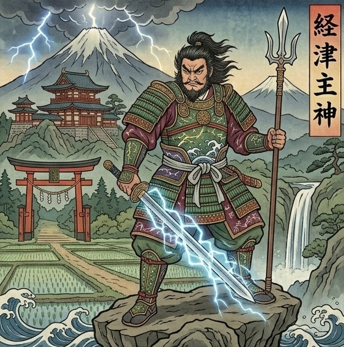

Shige様は本来
迷わず選び取れる方です。
「これだ」と決めたら
誰よりも早く動ける
そんな鋭い判断力をお持ちです。
白黒つけずに
ダラダラ引きずることは
本当は得意ではありません。
自分の中の基準で
不要なものを断ち切って
前に進んでいける方です。
それなのに
なぜこのご縁だけは
決めきることができないのか。
Shige様には
独特な感性や
神秘的な世界を持つ相手に
心が動かされる
という性質があります。
分かりやすい方よりも
「他では出会えない光」に
強く惹かれる方です。
だからこそ
あの方のことも
簡単に切り離せず
「本当はもう一度繋がりたい」
という想いが
胸の底に
静かに残り続けているんです。
でも、大丈夫です。
その答えの出し方を
あなたを守る神様が
ちゃんと視せてくれています。
あなたを守っているのは
経津主神
（ふつぬしのかみ）。
剣の神
裁断の力を持つ
神様です。

鋭い判断力と
裁断力を持ち
物事の本質を
一刀で見抜く力を宿す
神様です。
そんな剣の神様の
加護を受けているので
Shige様はこれまでも
人生の大事な場面で
ご自分の判断で
選び取ってこられたはずです。
あの方は
大地のような
温かなブラウンのオーラを
持っています。
Shige様の鋭い白銀とは
別の性質を持ち
どっしりと構えながら
自分の道を
静かに守る方です。
ただ、そのブラウンの奥に
「自分の意思で決めたい
安易に人には心を預けきれない」
という性質を
持つ方でもあります。
外からは
穏やかに見えても
その内側で
関わる人との距離を
静かに測っています。
でも確かに視えるのは
あの方の大地に
Shige様の白銀の光が
今もまだ
静かに残っているということ。
あのご縁が
Shige様の人生で
どんな意味を持っていたのか。
あの方と過ごした時間が
今のShige様に
何を残したのか。
このご縁が
もう一度動く瞬間は
訪れるのか。
私には、視えています。
ただ、これは
守護神からお預かりしている
Shige様のこれからを動かす
重たい言葉です。
本式守護霊視鑑定の場で
丁寧にお伝えさせていただきますね。
Shige様の中で
起きているぶつかりは
時間が経てば自然に片付くもの
ではありません。
想いを抱えたまま
この夏を越え、秋を越えた時。
一年後のShige様が
「あの方への想いに
答えを出せた自分」で
いられるか
「答えが出ないまま
時間だけが過ぎた自分」でいるか。
その差は、今この瞬間に
Shige様が
「自分の状態を正しく知るか」
で決まります。
あの方の中に残る
Shige様の記憶は少しずつ
「思い出の景色」として
輪郭が固まっていきます。
そうなる前に
Shige様にちゃんと
知っていただきたいことが
私には視えています。
本式守護鑑定で
Shige様にお渡しするのは
あの方が大地の奥で
Shige様をどう受け止めているのか
別れの時に
伝えきれなかった想いを
ひとつひとつ視て
お伝えします。
あの方との縁が
もう一度動く瞬間が
訪れるのか。
その時期と
その時起きることを
丁寧にお伝えします。
Shige様の中に本来ある
迷わず選び取る力を
このご縁の中で
どう使えばいいのか。
具体的にお伝えします。
今日からShige様にできる
守護を高める方法をお渡しします。
Shige様ご自身の手で
未来を選び取るための鑑定です。
その一歩を
ここから踏み出してください。
今、Shige様のために
運命の扉は最も大きく開かれています。
この巡り合わせは
残念ながら永遠ではありません。
私からのこのお手紙を受け取ってから
24時間以内に一歩踏み出すと
止まっていた運命は
最もなめらかに動き始めます。
ご自身の手で
最高の未来を選び取りたいと
心から願うShige様へ。
通常20,000円のところ
今回に限り、特別価格9,800円で
本式守護霊視鑑定を行います。
1日限定3名までしかお受けできません
リンク先が表示されない場合
本日分は締切ですのでご了承ください。
お申し込み後、
購入時のお名前をお知らせください。
1日以内に、
あなただけの鑑定書をお届けします。
Shige様の物語が
Shige様らしい結末を迎えることを
私は守護の声を通して
すでに知っています。
ご縁に、心から感謝を込めて。